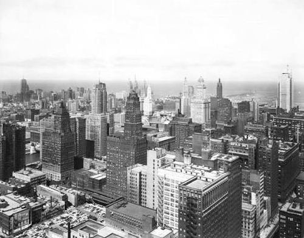
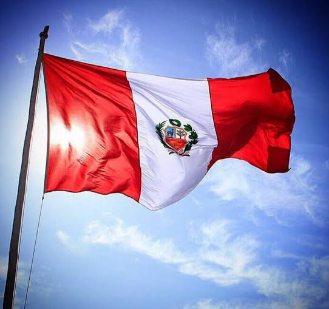
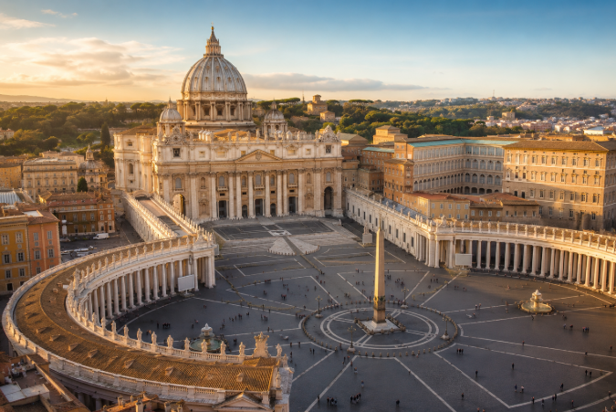

De Robert Francis Prevost al líder de la Iglesia católica
Robert Francis Prevost nació el 14 de septiembre de 1955 en Chicago, Estados Unidos. Desde joven sintió interés por la vida religiosa y decidió dedicar su vida al servicio de la Iglesia. Antes de convertirse en papa, desarrolló gran parte de su misión en Perú, donde trabajó con distintas comunidades.

Robert Francis Prevost nació en una familia estadounidense. Durante su juventud se interesó por la religión y comenzó un camino de formación que lo llevó a ingresar en la Orden de San Agustín.
Fue ordenado sacerdote en 1982 y desde entonces comenzó a desarrollar diferentes tareas dentro de la Iglesia.
Prevost pasó varios años trabajando en Perú, donde participó en tareas pastorales y acompañó a distintas comunidades. Su experiencia en el país fue una parte importante de su trayectoria religiosa.
En 2014 fue nombrado obispo de Chiclayo, una ciudad peruana en la que continuó con su labor pastoral.


En 2023, el papa Francisco lo nombró prefecto del Dicasterio para los Obispos y lo creó cardenal. Este cargo le permitió participar en tareas importantes relacionadas con la organización de la Iglesia.
Su experiencia en distintos países y sus responsabilidades dentro del Vaticano fueron parte de su camino hacia el papado.
Nombre completo: Robert Francis Prevost
Fecha de nacimiento: 14 de septiembre de 1955
Lugar de nacimiento: Chicago, Estados Unidos
Orden religiosa: Orden de San Agustín
País donde desarrolló gran parte de su misión: Perú